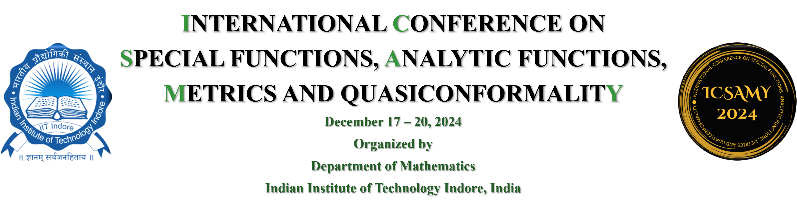

Topics Include
Analysis and geometry of metric spaces
Quasiconformal and quasiregular mappings
Several complex variables
Special functions
Univalent harmonic functions
Aim of the conference
-
The main purpose of the conference is to foster
international cooperation in the above areas to
further the interaction among the researchers
from India and abroad. The primary emphasis is
to promote collaborative research network
involving the participants, in particular early
career mathematicians. Plenary and invited talks
will be aimed at providing an exposure to
graduate students and postdoctoral fellows about
the latest trends in the topics of the conference.
In particular, there will be sessions on open
problems in the fertile areas of the above topics.
The conference will also provide an opportunity
to the early career researchers to showcase their
work and obtain feedback from leading experts in
the field.
About Indore
-
The city Indore has held the title of being India’s
cleanest city for seven consecutive years. Indore
is a fascinating city with a blend of a rich cultural
and historical heritage hosting a wide range of
styles of the Maratha, Mughal, Holkar and British
era. Chhatris, Laal Bag Palace, Kanch Mandir are
cues of its architectural excellence. Situated on
one of India’s oldest pilgrimage routes from
Mahakaal at Ujjain on river Kshipra, to
Omkareshwar on the river Narmada and
onwards to Rameshwaram, Indore is
embellished by several forts and rocky shrines:
Mandu, Dewas, Maheshwar, and Omkareshwar
being the prominent ones. One of the most
legendary rulers of Indian history, Devi Ahilyabai
Holkar is the patron of many traditional
architecture here. Apart from these, the rustic
spirit of Chokhi Dhani and Nakhrali Dhani,
heritage resorts on the outskirts of Indore filled
with varied traditional Rajasthani delicacies adds
a Rajasthani flavour to the city. Gujarati and
Marathi cultures also have influenced life in
Indore. Being situated in the heart of India,
Indore has excellent air and rail connectivity with
the metro cities, namely, Mumbai, Kolkata, Delhi,
Hyderabad, and Bangalore. Places like Agra,
Jaipur, Udaipur, Ajanta-Ellora caves are in its
vicinity.
About IIT Indore
-
Indian Institute of Technology Indore located in
Madhya Pradesh, known as IIT Indore or IITI, is an
institute of national importance established by
the Government of India in 2009. Since February
2016, IIT Indore has started functioning from its
permanent campus. The Institute started
functioning on its permanent campus, spread
over an area of around 501.42-acres (2.1 square
km), on 17th February 2009. It is at Simrol, located
on Khandwa Road about 25 km from the city of
Indore. The institute has established state-of-the-
art infrastructure, including the computer centre,
well-equipped labs, advanced instrumentation
facilities, etc. IIT Indore has also been ranked 14 in
the Engineering category by NIRF 2023. Moreover,
it has been ranked 28 in the Overall category by
NIRF 2023. The faculty members of the institute
are well equipped to conduct high-quality
research in both Science and Engineering and are
also engaged in interdisciplinary research
activities. Researchers interested in collaborative
research are encouraged to contact the
concerned faculty. The institute is actively
engaged in organizing various research activities.
The larger commitment of the institute is to
socio-economic development, and is evident in its
multi-dimensional approach to social problems
and is engraved in its motto (knowledge for the
well being of all), which makes this institution
one of its kind and it stands out even within the
distinguished IIT family. For more details, please
visit: https://iiti.ac.in
About Department of Mathematics
-
Since its inception in July 2009, the Department
of Mathematics has evolved in several directions.
The department presently offers BTech in
Mathematics and Computing, MSc, and PhD in
Mathematics. The department aims to focus on
providing a comprehensive curriculum at
undergraduate and postgraduate levels, relevant
research and career opportunities in India and
abroad. Presently, the department has eighteen
faculty members. For more information, please
visit the site: https://math.iiti.ac.in